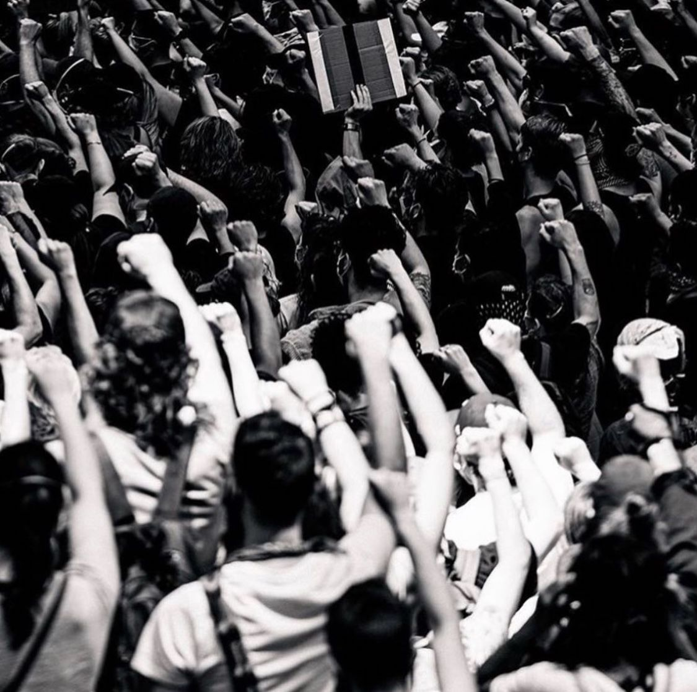
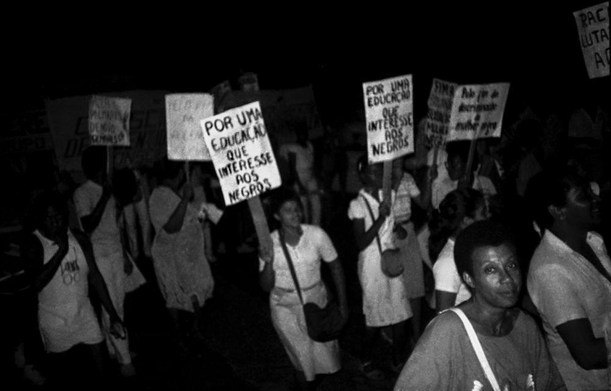
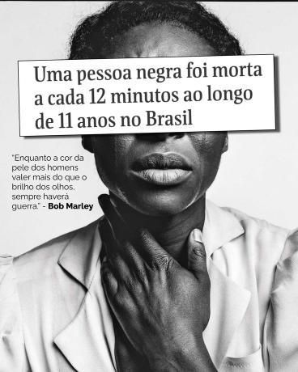

Institucional
Cotas, ações afirmativas e reformas nas políticas de segurança pública.
Educacional
Letramento racial e valorização da história afro-brasileira nas escolas.
Individual
Adotar uma postura antirracista ativa e apoiar empreendedores negros.
Caminhos para a Igualdade Racial
Clique nas categorias abaixo para explorar as soluções práticas de combate ao racismo:
Institucional e Político
- Cotas e Ações Afirmativas: Garantir o acesso de pessoas negras a universidades, concursos e cargos de liderança para equilibrar o ponto de partida socioeconômico.
- Reforma na Segurança: Implementar câmeras corporais em policiais e combater o "perfilamento racial" (abordar alguém apenas pela cor da pele).
- Punição Rigorosa: Aplicar leis de combate ao racismo e à injúria racial de forma severa e sem impunidade.

Educacional e Cultural
- Letramento Racial: Ensinar história afro-brasileira e indígena nas escolas, indo além da narrativa da escravidão.
- Representatividade: Incentivar a presença de negros na mídia, publicidade e tecnologia em papéis de prestígio, combatendo estereótipos.

Individual e Social
- Postura Antirracista: Não basta não ser racista; é preciso intervir ao presenciar preconceito e educar-se por conta própria.
- Apoio Econômico: Priorizar o consumo de empresas e profissionais negros para fortalecer a autonomia financeira da comunidade.

Perguntas Frequentes (FAQ)
Clique nas perguntas abaixo para expandir as respostas:
A injúria racial consiste em ofender a honra de alguém especificamente, utilizando elementos referentes a raça ou cor. Já o crime de racismo atinge uma coletividade indeterminada de indivíduos, discriminando toda uma raça ou etnia.
Intervenha se for seguro, ofereça apoio à vítima, reúna provas (como vídeos, fotos e contatos de testemunhas) e ajude a registrar a ocorrência na delegacia ou pelo Disque 100.
Sim! O Disque 100 garante o sigilo absoluto das informações e o anonimato de quem realiza a denúncia.